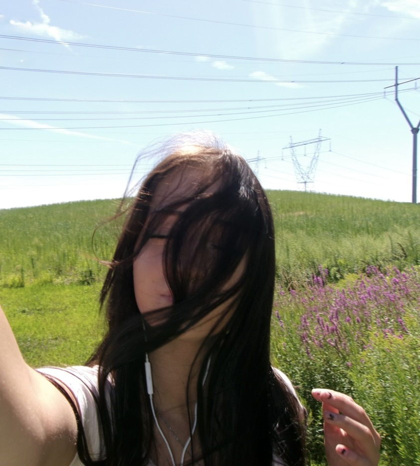
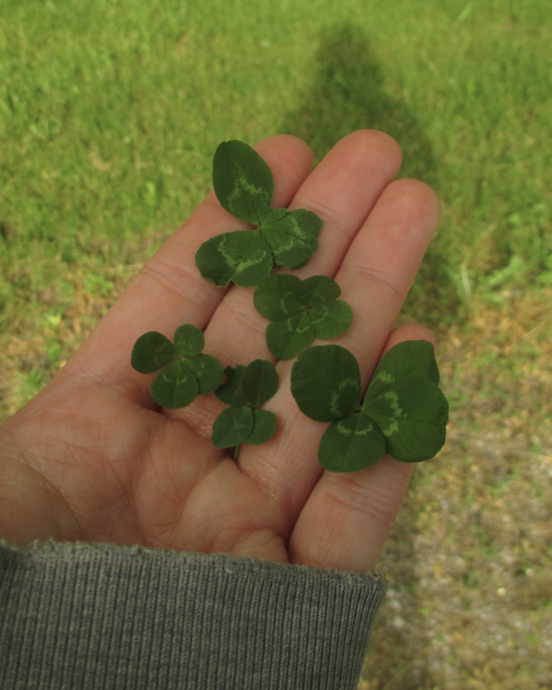
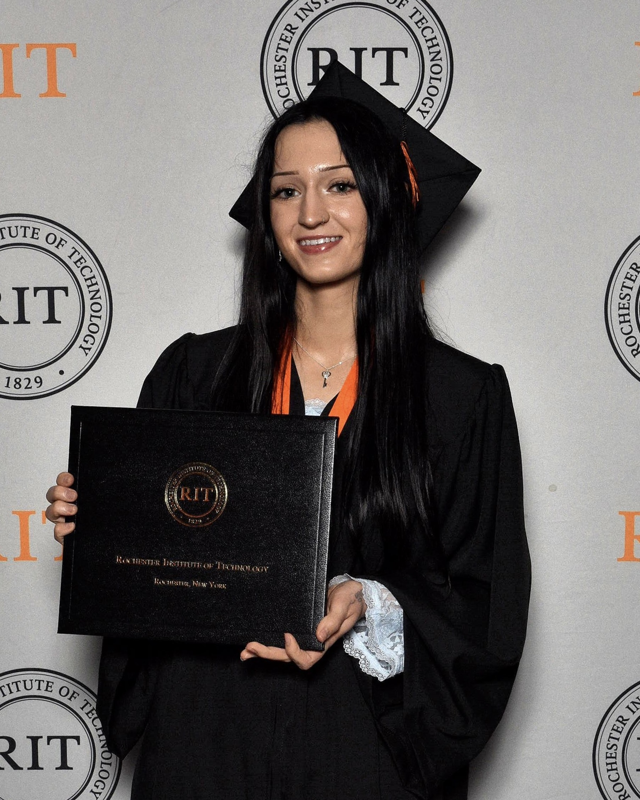
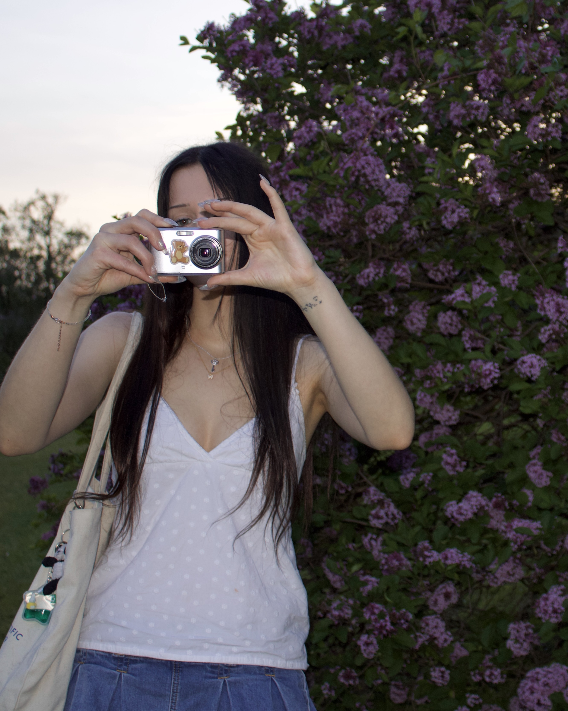

About Me


Hi! I'm Mimi Harrison, a recent graduate of the Rochester Institute of Technology in Rochester, New York. I am originally from Dayton, Ohio, and I'm about to move to Tallahassee, Florida, to begin my Ph.D. in physics. My interest in physics was born from love of nature, and many NOVA documentaries with my grandpa. My research areas are early-universe galaxy formation and evolution, and theoretical astrophysics, with a focus on cosmic ray acceleration.
Outside of research, I am fervently obsessed with the outdoors, birds, and snakes. In Rochester, I was lucky enough to share my backyard with state wetlands and a plethora of creatures, and a little over a year ago, I bought a camera and began to document what I see on hikes, bike rides, and other adventures (All pictures displayed on this site were taken by me). I also collect four-leaf clovers, feathers, and fortunes from fortune cookies, and I have three precious dogs.
I began creating this site in early June 2026 to experiment with a new medium for documenting my research work, summer reading list, and outdoor hobbies. Now, I am also using it to share my summer poetry final manuscript. I hope you enjoy!
More Me!


